SECURITY.md and docs/security/residual-risk.md in the
repository.
OAK Community is a compiler-shaped control plane for designing, evaluating and planning AI systems. You feed it an architecture brief — a bounded description of a problem, its stakeholders, data, quality priorities and constraints, written in plain language (Markdown or text) or as structured YAML or JSON — and it walks that brief through a deterministic pipeline: it interprets the brief into typed claims with provenance, asks you its ranked clarification questions five at a time, generates and compares candidate architectures against hard constraints, evaluates the selected candidate against an evaluation contract, records an immutable decision with your rationale, attaches an assurance plan, and finally compiles a canonical deployment bundle and a typed, non-executing runner plan.
Three properties shape everything you will see. Deterministic: the
same inputs produce byte-identical canonical artifacts, so digests are meaningful
and two clean machines agree. Offline: after installation, nothing
in this manual needs a hosted service or a model provider, and the whole CLI journey
runs with the network disabled; only the Docker chapters (4 and 5) pull their pinned
base images once, on first build, and the optional model provider in chapter 4 — which
nothing requires — is the single feature that ever calls out. Fail-closed: anything unknown, malformed, expired, unsigned or
mismatched is refused with a stable OAK-* error code, never skipped.
It is not a deployment tool for real infrastructure: the only target it will ever touch is an explicitly acknowledged, network-isolated local fixture. It is not multi-tenant, has no authentication, and binds to loopback. It is not a hosted service and never phones home. And a compiled plan is not permission to run anything — execution authority comes only from the signing and approval chain in chapter 5, verified independently by the runner.
| Requirement | Version | Notes |
|---|---|---|
| macOS or Linux | macOS 11+ on Apple silicon (arm64) — Intel Macs are not supported; Linux glibc ≥ 2.24 (x86_64) / ≥ 2.27 (aarch64) | See docs/platforms.md for the authoritative matrix, including why dependency installation fails outright on macOS x86_64 |
git | any recent | Required even offline: the hygiene check shells out to it |
uv | 0.10.x | Installs and pins Python 3.13.12 itself |
Node.js + pnpm | pnpm 11.15.1 | make bootstrap requires pnpm; the pinned Node 24.18.0 it downloads is only exercised by the web workspace, so your system Node version does not matter |
| Docker with Compose | any recent, daemon on the default socket | Only for the web stack (ch. 4) and the runner's apply cycle (ch. 5). The runner strips DOCKER_HOST and friends, so rootless Docker, Colima and Podman socket shims cannot reach it (RR-013) |
git clone https://github.com/nmasamba/OAK.git
cd OAK
make bootstrap
make bootstrap installs the locked Python and web dependencies and
downloads pnpm's managed Node runtime. It is the one networked step the CLI journey
ever needs: chapters 3, 6 and 8 work with egress disabled from here on, while
chapters 4 and 5 additionally pull their pinned Docker base images the first time
you build them.
uv run oak --version
0.7.1uv run oak … so they work
from the repository without activating anything. If you prefer, activate the
environment once (source .venv/bin/activate) and drop the
uv run prefix.
make check
This runs formatting, linting, type checks, boundary rules, contract validation and
the unit, integration and end-to-end suites — around ten minutes. The
PostgreSQL-gated suites skip silently unless a database is published; that is
expected on a fresh machine and documented in docs/development.md.
This chapter follows the reference brief that ships with the repository — a citation-first documentation-search service — from intake to a compiled bundle. Every command runs offline. Start in the repository root and create a workspace:
uv run oak init ./workspace
cd workspaceA brief can be written in plain language — a Markdown or text file — or as structured YAML/JSON; intake accepts all four and quarantines whichever you provide as an untrusted source record. What happens next depends on the form:
public-manual-qa.yaml used below, fills the typed intent directly
field by field, which is what lets the rest of the pipeline run end-to-end with
no model involved. A structured brief stays deterministic even when a model is
configured; only a plain-language brief is offered to one.--interpreter deterministic keeps it that
way afterwards. Configuring one is a decision with a consequence worth stating plainly:
the brief's text is then sent to that provider, under that provider's terms.
uv run oak design ../examples/briefs/public-manual-qa.yaml
Design case design-case.public-manual-qa@0.1.1 is needs_confirmation with 5 questionsOAK quarantines the brief as an untrusted source record, then deterministically interprets it into a typed intent. Every populated value carries provenance: a fact quoted from the brief, an inference, or a domain default — you will see these classes again in the browser workspace.
uv run oak questions
question.model-hardware: Which approved model licence and measured target hardware apply? [open]
question.production-use: Confirm whether production data is permitted for this design case. [open]
question.action-autonomy: Confirm the maximum action autonomy permitted for this system. [open]
question.data-classification: Confirm the highest data classification used by this design. [open]
question.data-volume: What document volume and update cadence must the design support? [open]At most five ranked questions, each explaining why it matters to candidate choice. Answers live in a small YAML file; the reference answers ship alongside the brief:
uv run oak confirm --answers ../examples/briefs/public-manual-qa-answers.yaml
Recorded design-case.public-manual-qa@0.1.2 as ready_for_candidatesConfirmation creates immutable successors for the affected claims — the original interpretation is never edited, and the audit trail records who decided what.
uv run oak candidates
ID VARIANT STATUS FRONTIER REJECTIONS
candidate-00 simpler_baseline feasible true 0
candidate-01 minimum_sufficient feasible true 0
candidate-03 balanced_enterprise feasible true 0
candidate-04 high_assurance_sovereign infeasible false 1
Four provider-neutral candidate architectures are generated from a bundled synthetic
catalogue, checked against hard constraints, and scored with transparent estimator
ranges (cost, latency, quality, operability, energy). Infeasible candidates stay
visible with their rejection reasons — in the reference case,
candidate-04's accelerator requirement is unconfirmed, and an unknown
hard constraint never passes, so it stays visible as infeasible with exactly that
reason.
uv run oak evaluate candidate-03
Evaluation evaluation-result.candidate-03 is pass
printf 'Balanced trade-off between quality, cost, and operability.\n' > decision.md
uv run oak select candidate-03 --rationale-file decision.md
Selected candidate-03 in decision.candidate-03
uv run oak assure candidate-03 --output ./assurance
Wrote assurance.candidate-03 to assurance
evaluate runs the deterministic reference evaluation contract and
records pass/fail per metric. select records an immutable decision
bound to you (OAK_ACTOR), your rationale, and the rejected
alternatives. assure writes the assurance plan: required tests,
evidence, controls, owners, and the gate blockers that stand between this design
and any real deployment.
uv run oak plan candidate-03 \
--target ../examples/targets/local-fixture.yaml \
--output ./bundle
Compiled bundle.candidate-03.target.local-fixture to bundle; no target action was invoked
The target profile is explicit invocation data — OAK never treats your machine as
the target. Compilation validates the profile, binds it to the tenant, checks the
candidate's platform and capacity requirements against it, and emits five canonical
files into the output directory — architecture-decision.json,
assurance-plan.json, semantic-manifest.json,
deployment-bundle.json and a draft typed
runner-plan.json whose verification policy is derived from that exact
target. For this
read-only fixture the plan contains only inventory,
validate, render, plan and
verify operations.
uv run oak export --output ../case-export
Exported design-case.public-manual-qa@0.1.7 to ../case-export
uv run oak import ../case-export --directory ../restored
Imported design-case.public-manual-qa@0.1.7 into …/restoredThe export is the portable, digest-verified unit — also your backup before any upgrade. Import revalidates every artifact, digest and audit event before publishing the restored workspace.
The web workspace drives the same journey through a reviewer-friendly interface, backed by a persistent PostgreSQL control plane. It needs Docker with Compose (see the prerequisites in chapter 2), and the first build pulls the pinned base images — the one step in this chapter that uses the network. Start the stack:
docker compose up -d --build--build: Compose happily reuses a stale cached image after
you change source. Confirm what you are running with
curl http://127.0.0.1:8080/version — it must report 0.7.1.
The API listens on 127.0.0.1:8080 and the workspace on
http://127.0.0.1:5173 — loopback only, by design. The screenshots below
are captured from a real journey against this stack.
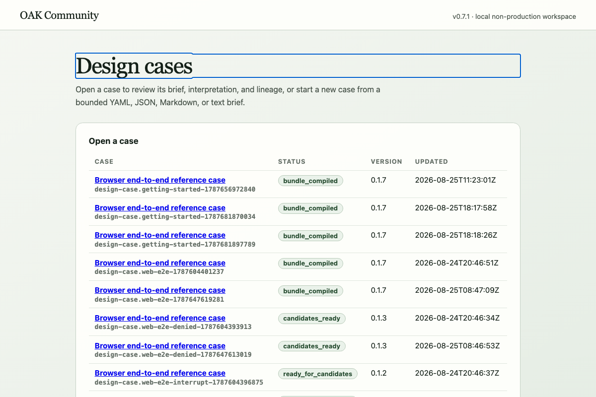
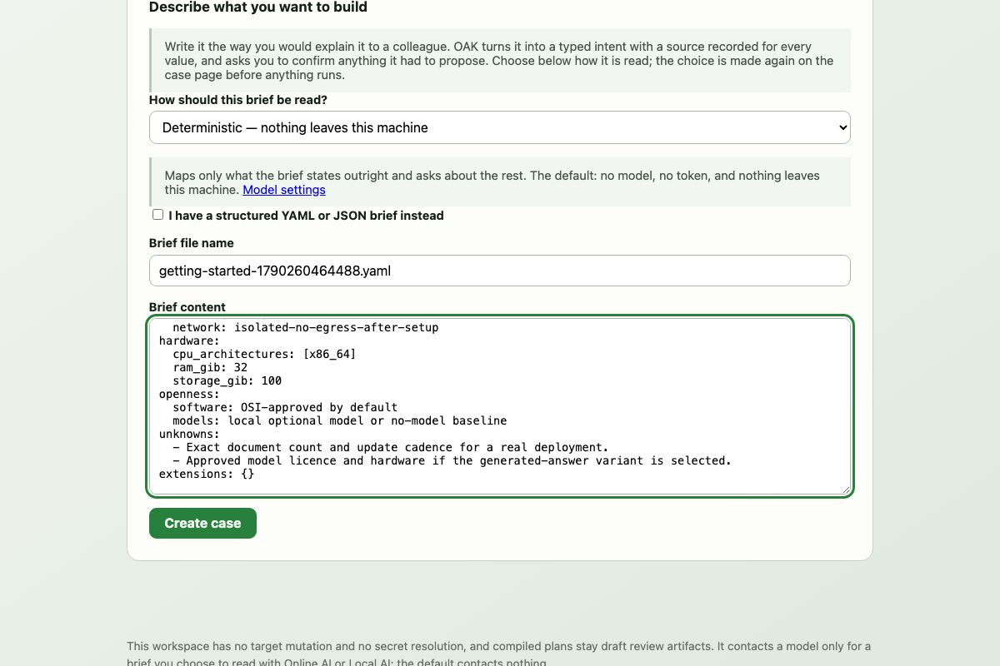
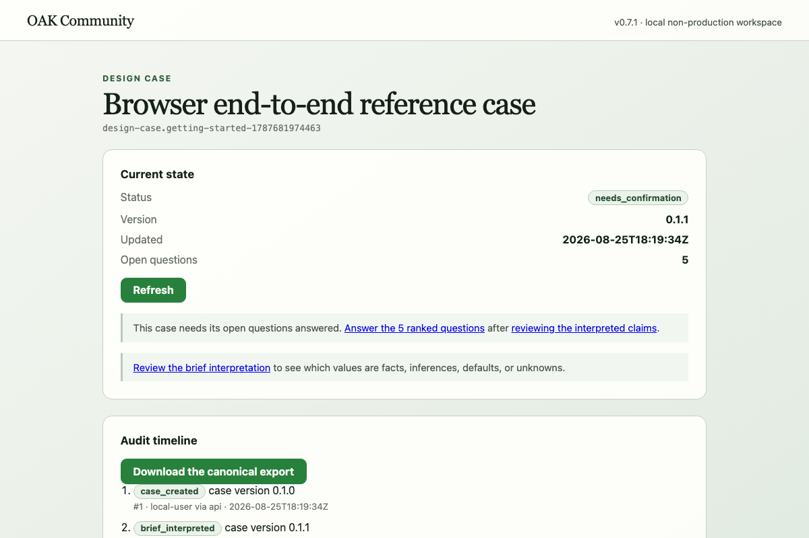
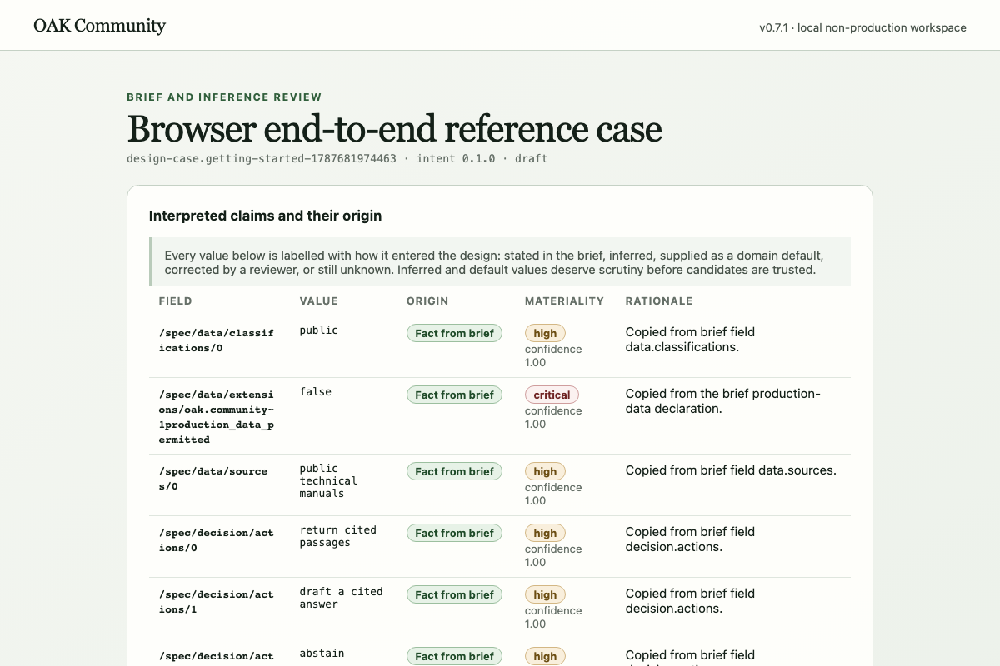
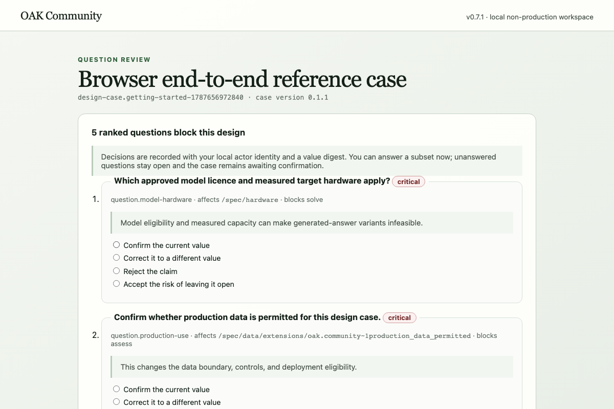
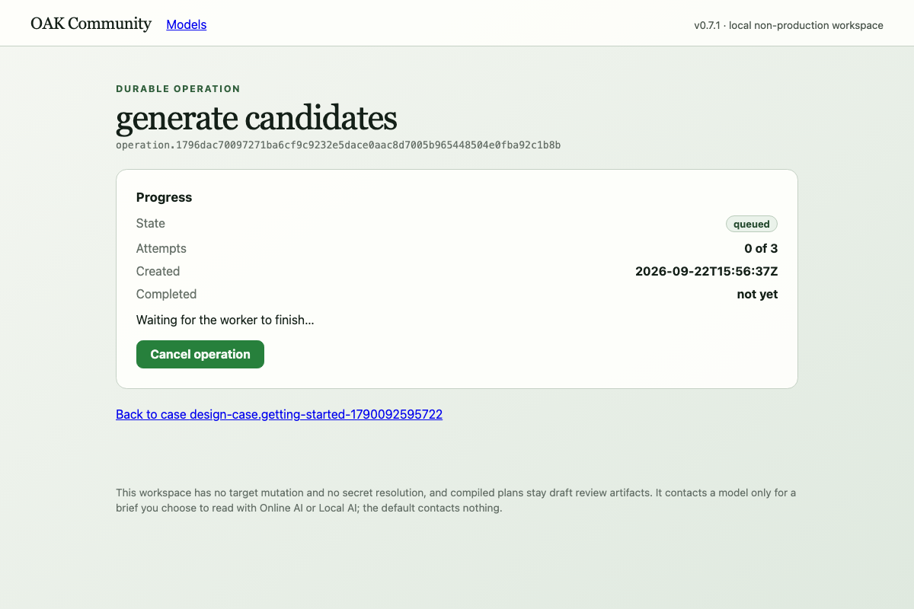
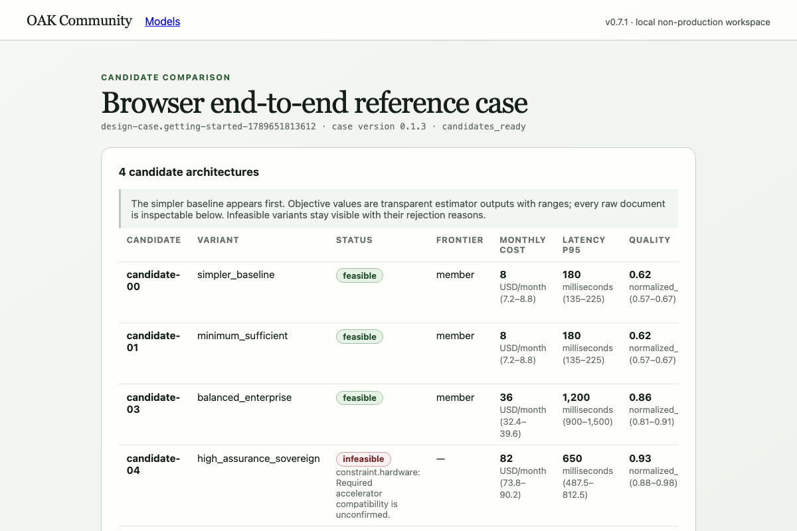
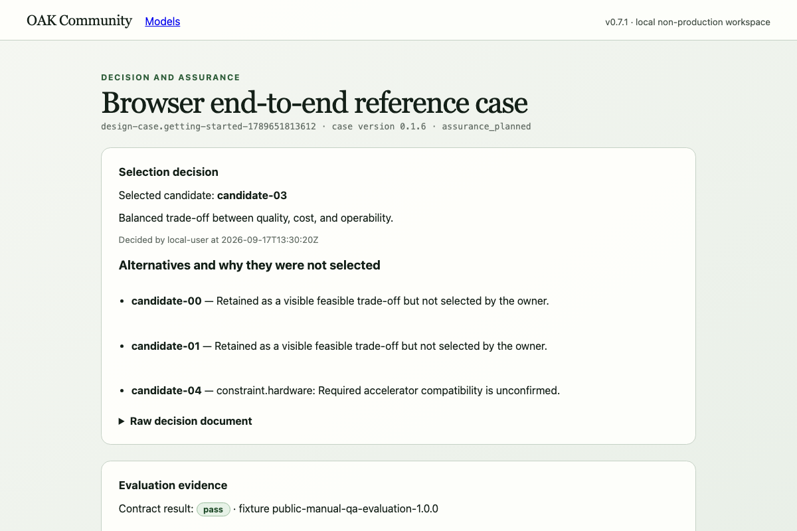
candidate-04 carries its unconfirmed hardware constraint), and the evaluation evidence beneath. The assurance plan's controls and gate blockers follow further down the same screen.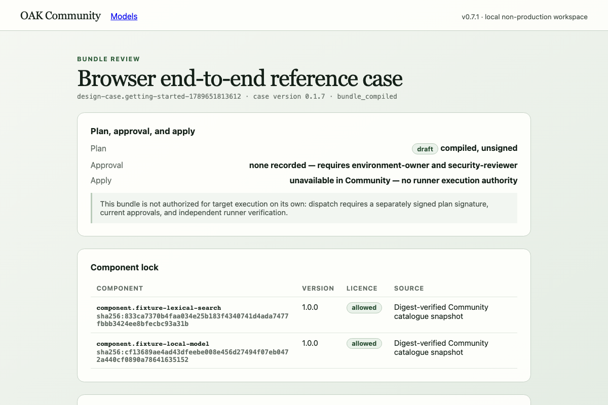
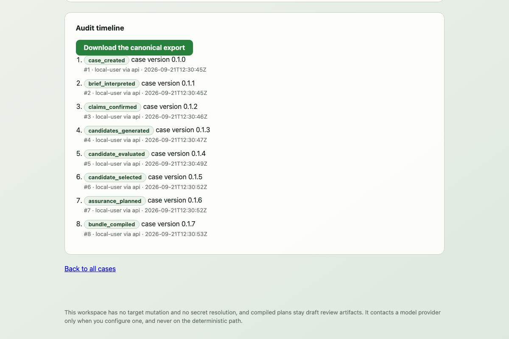
Everything above is deterministic. If you would rather write briefs in plain language and have them interpreted for you, Settings → Models is where you say so. Nothing is configured by default, and nothing here is required by any other part of the manual.
The page needs the capability token the API minted when it started — not a password, but a capability that dies with that process. Print it on the machine running the API:
docker compose exec -T api oak models tokenPaste it once, then choose a family. Hugging Face is the default and its Detect models button works with no key at all: it reads the public catalogue, keeps only ungated models under a permissive licence with a live structured-output route, and recommends one. Storing a key is a separate step, and the key never comes back — the page shows only which backend holds it and a salted fingerprint.
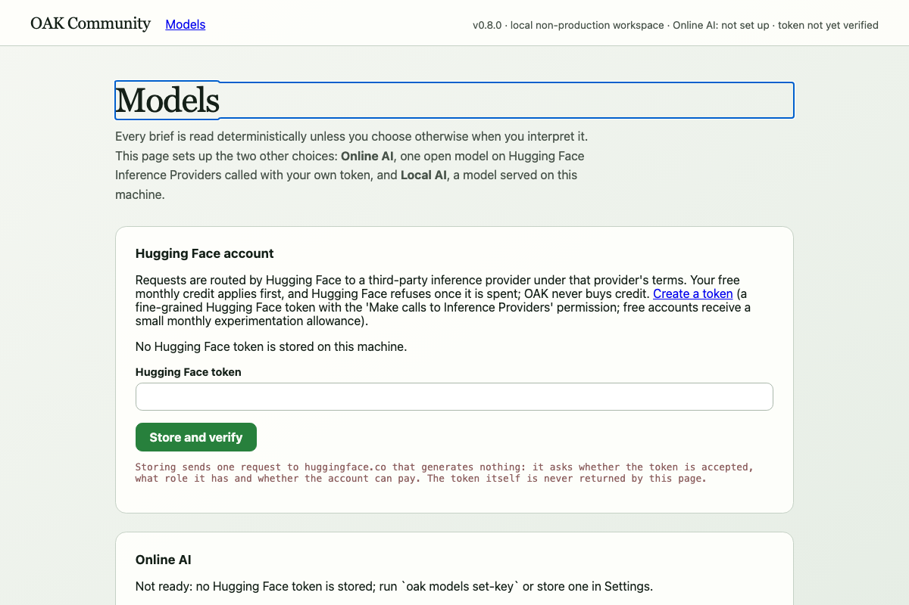
oak design --interpreter deterministic always does.
Stop the stack with docker compose down (add --volumes to also drop the local database and artifact store).
Everything so far produced inert artifacts. This chapter is where OAK lets something run — under the strictest discipline in the system. Two separate trust domains cooperate without ever trusting each other's say-so:
The runner demonstration uses the one mutation-capable target that ships: an
acknowledged, network-isolated fixture whose only permitted mutation is creating
and removing a single never-started container (Docker required). Start from the
repository root again — chapter 3 left you inside ./workspace, and the
../examples/… paths below resolve from a workspace created in the root.
Set the environment, then compile chapter 3's journey against that target:
export OAK_TRUST_DIRECTORY=$PWD/trust
export OAK_DISPATCH_MAILBOX=$PWD/mailbox
export OAK_ACTOR=local-user
uv run oak init ./runner-demo && cd runner-demo
uv run oak design ../examples/briefs/public-manual-qa.yaml
uv run oak confirm --answers ../examples/briefs/public-manual-qa-answers.yaml
uv run oak candidates
uv run oak evaluate candidate-03
printf 'Balanced fixture for the runner demonstration.\n' > decision.md
uv run oak select candidate-03 --rationale-file decision.md
uv run oak assure candidate-03 --output ./assurance
uv run oak plan candidate-03 \
--target ../examples/targets/local-mutation-fixture.yaml \
--output ./bundleuv run oak keys init
plan-signer: sha256:d887…cdb6 (development)
approver: sha256:7108…0488 (development)
extension-steward: sha256:edbb…ce5e (development)
uv run oak sign
Signed plan for design-case.public-manual-qa@0.1.8
uv run oak approve dry_run
uv run oak approve apply
uv run oak approve rollback
uv run oak dispatch apply verify rollback
Dispatched apply, verify, rollback as dispatch.public-manual-qa.13
keys init creates three development-labelled Ed25519 identities with
separated roles (your fingerprints will differ — keys are generated fresh) — the
plan-signer may not approve, and the runner enforces that the
two signatures come from different keys. Each approve is bound to one
action, the exact plan and bundle digests, the target's identity and fingerprint, a
nonce, and an expiry. dispatch writes the signed lease envelope and
every attachment into the mailbox — delivery, not execution.
OAK_RUNNER_MAILBOX=$OAK_DISPATCH_MAILBOX \
OAK_RUNNER_TRUST_ANCHORS=$OAK_TRUST_DIRECTORY \
OAK_RUNNER_TARGET_PROFILE=../examples/targets/local-mutation-fixture.yaml \
OAK_RUNNER_HOME=$PWD/runner-home \
uv run oak-runner run-once
completed dispatch.public-manual-qa.13: succeeded
The runner independently verifies the revocation set, the envelope, every digest
and signature against its own pinned anchors, the target fingerprint it recomputes
locally, the lease and nonce, the compiled verification policy's clauses, the
adapter allowlist and typed parameters, and the approvals — all before touching
anything. It then executes the requested operations in
plan order, which puts verify first: it verifies, then applies —
creating the fixture container with docker create --network=none,
reading back the image digest the daemon actually resolved and refusing on any
mismatch — then rolls back, removing exactly what it created, and publishes a
signed completion message recording
"applied_kinds": ["verify", "apply", "rollback"]. Then:
uv run oak ingest --output jsonOAK_RUNNER_HOME=$PWD/runner-home uv run oak-runner status
{
"journals": [
{
"chain": "verified",
"dispatch": "dispatch.public-manual-qa.13",
"entries": 8,
"manual_recovery_required": false
}
]
}
ingest verifies the runner's signed messages — delivery never implies
success — and status reports the journal's hash-chain integrity and
any manual-recovery state. status reads
OAK_RUNNER_HOME — pass it as shown, because the variables above were
prefixes on the run-once command and do not persist. Without it,
status reads the default home (~/.oak/runner) and reports
an empty journal list rather than failing.
run-once reports whether the runner ran, not whether anything
succeeded: it exits 0 even when every dispatch was denied, because
denying is the runner working correctly. Denials appear on stderr as
denied <dispatch>: <reason> and come back through
oak ingest as signed messages with "outcome": "denied".
The reason carries a stable code; the families, in the order the runner checks:
| Denial family | Codes | What it means |
|---|---|---|
| Revocation set | OAK-RUNNER-REVOCATION | The signed revocation manifest is missing, does not match the notices on disk, or its sequence regressed. Re-publish from the control plane; do not hand-edit the mailbox (Figure 3) |
| Protocol and schema | OAK-RUNNER-PROTOCOL, OAK-RUNNER-SCHEMA | The envelope's protocol version is unsupported, or an attachment is not schema-valid — usually a version mismatch between control plane and runner |
| Attachment integrity | OAK-RUNNER-ATTACHMENT, OAK-RUNNER-DIGEST | An attachment's bytes do not match the digest the envelope references — the mailbox was altered or truncated. Re-dispatch |
| Signatures and trust | OAK-RUNNER-SIGNATURE, OAK-RUNNER-TRUST | A signature does not verify against the runner's own pinned anchors — never against a key carried in the document itself |
| Identity and plan state | OAK-RUNNER-TENANT, OAK-RUNNER-ENVIRONMENT, OAK-RUNNER-TARGET, OAK-RUNNER-PLAN-STATE, OAK-RUNNER-PLAN-EXPIRED | Tenant, environment or target identity mismatch — the target fingerprint is recomputed locally, not read from the envelope — or the plan is not dispatchable or has expired |
| Lease and replay | OAK-RUNNER-LEASE, OAK-RUNNER-REPLAY | The lease is outside its validity window or its nonce was already consumed; an unreadable nonce ledger refuses rather than reading as empty |
| Separation of duties | OAK-RUNNER-SEPARATION | The signing and approving identities are the same key — re-sign and re-approve with separated roles |
| Verification policy | OAK-RUNNER-POLICY | A requested kind is outside the target-derived allowed_operation_kinds, or a mutating kind was requested where the target forbids mutation |
| Operations and adapters | OAK-RUNNER-ADAPTER, OAK-RUNNER-PARAMETERS, OAK-RUNNER-REGISTRY, OAK-RUNNER-SECRETS, OAK-RUNNER-NETWORK, OAK-RUNNER-TARGET-CAPABILITY | An operation names an adapter or parameters outside the code-level allowlist and schema, an image registry outside the target's allowance, a secret reference or network destination the target does not permit, or a capability the target does not have |
| Approvals | OAK-RUNNER-APPROVAL | The approval for the requested action is missing, revoked, expired, or bound to different digests or a different target |
| Execution time | OAK-RUNNER-IMAGE, OAK-RUNNER-SUBPROCESS, OAK-RUNNER-DRIFT, OAK-RUNNER-APPLY, OAK-RUNNER-ROLLBACK | After every verification passed: the image digest the daemon actually resolved does not match the approved one (the container is removed), the docker invocation itself failed, target state drifted mid-run, or the fixture apply or its rollback failed — a failed rollback is what raises manual_recovery_required |
Every code is documented with its raise site in docs/error-codes.md,
and the ordered checks themselves are contractual — see
docs/signed-runner.md.
uv run oak revoke-approval apply --reason "manual drill"If you received OAK Community as built artifacts rather than as this repository, verify them before installing anything. The repository builds with:
make release
which builds the wheel and sdist twice and fails if the digests differ, installs
the wheel into a clean environment holding only the locked runtime closure, runs it
from outside the checkout, and emits an SBOM, a licence inventory, and
SHA256SUMS. On the consuming side:
# in a checkout, against the build you just made
make verify-release
# what a consumer actually runs, against a downloaded directory
python scripts/verify_release.py ./downloaded-release
OK THIRD-PARTY-LICENCES.md
OK oak-community-0.7.1.cdx.json
OK oak_community-0.7.1-py3-none-any.whl
OK oak_community-0.7.1.tar.gz
verified 4 artifact(s) against SHA256SUMS
Checksums prove the bytes match the manifest. They do not prove who produced
them: OAK Community release artifacts are unsigned.make verify-release is the in-checkout convenience: it runs the same
script against dist/release. If you received artifacts rather than this
repository, you have no Makefile — use the script directly (it is standard-library
only, imports nothing from OAK, and needs no installed OAK), or the equivalent
shasum -a 256 -c SHA256SUMS on macOS /
sha256sum -c SHA256SUMS on Linux. Exit codes: 0 verified, 2
verification failed, 3 the manifest or a listed file is missing or malformed.
Be aware of what this does and does not prove: checksums prove the bytes match the manifest;
they do not prove who produced them. Release artifacts are deliberately not signed
yet (RR-005 in the residual-risk register), and the container images
are not byte-reproducible (RR-006) — their SBOMs and provenance under
docs/release/0.7.1/ record what one build produced.
| Symptom | Likely cause | What to do |
|---|---|---|
A command refuses with OAK-EXPECTED-VERSION | The case advanced since you last read it | Re-read the case and retry with the current version — this is optimistic concurrency working, not an error to force past |
| The web stack serves an old version | docker compose up -d reused a cached image | Always --build, then check /version |
OAK-RUNNER-REVOCATION on every dispatch | The revocation manifest is missing or the notice set does not match it | Re-publish from the control plane (oak revoke-approval, or a fresh dispatch establishes an empty manifest). Do not hand-delete notices — the mismatch is the protection working |
OAK-RUNNER-REPLAY on every dispatch | The consumed-nonce ledger in $OAK_RUNNER_HOME is corrupt; it deliberately refuses rather than reading as empty | Inspect consumed-nonces.json; remove it only if you accept that previously burned nonces become replayable |
OAK-WORKSPACE-CORRUPT on every command | Manifest unreadable, or written by a format this build does not know | Restore from your last oak export — this is why the manual says export before upgrading |
run-once exited 0 but printed denied <dispatch>: <reason> | Denying a dispatch is the runner working correctly; exit status reports whether the runner ran, not whether anything succeeded | Read the signed messages (oak ingest) or the journal, and look the denial code up in the chapter 5 table or docs/error-codes.md |
| Runner exits 64 or 70 with a code on stderr | The runner itself could not run: 64 is a missing required environment variable, 70 a configuration or verification refusal that stopped it before processing (e.g. OAK-RUNNER-CONFIG) | Fix the environment or target profile it names — every OAK-* code is documented with its raise site in docs/error-codes.md |
The full runbook is docs/operations.md; the complete generated
error-code reference is docs/error-codes.md.
# 1 · Stack, volumes (your data), OAK-built images, fixture containers
docker compose down --volumes --remove-orphans
docker image rm -f $(docker image ls -q 'oak-community-*') 2>/dev/null || true
docker rm -f $(docker ps -aq --filter "label=oak.fixture=true") 2>/dev/null || true
# 2 · Home-directory state: PRIVATE KEYS, runner journals, consumed nonces
rm -rf ~/.oak
# 3 · Workspaces you created (you chose these paths; OAK does not track them),
# and chapter 5's trust directory and mailbox, which hold DEVELOPMENT PRIVATE KEYS
rm -rf ./workspace ./runner-demo ./case-export ./restored ./trust ./mailbox
# 4 · Build output, venv and caches inside the checkout
make clean-all
# 5 · Confirm — run this BEFORE step 6, which deletes the script itself
python scripts/check_clean_machine.py
# 6 · Finally the checkout, if you no longer want the source
cd .. && rm -rf OAK
~/.oak holds private signing keys, the runner's journal, consumed
nonces and its revocation-sequence mark — export anything you want to keep first.
Chapter 5 placed its trust directory and mailbox in the repository root and its
runner home inside runner-demo/: trust/ holds development
private keys, which is why step 3 names it explicitly rather than leaving it to the
checkout's removal. Shared caches
(~/.cache/uv, the pnpm store, Playwright browsers) and
the third-party images OAK pulled (postgres:17.6-alpine,
python:3.13.12-slim, node:24.18.0-alpine,
nginxinc/nginx-unprivileged:1.29.1-alpine) are shared Docker and
toolchain state, yours to keep or remove with docker image rm. The full
runbook version, including the named-volume and release-image variants, is
docs/operations.md § Uninstall. Step 5 reports any OAK-related state
that survived — run it while the checkout still exists, because step 6 removes the
script along with everything else.
The source of this manual is docs/manual/manual.html; the PDF is a
rendering of it. Both are committed. To rebuild:
# screenshots, from a live journey against the Compose stack
docker compose up -d --build
OAK_MANUAL_SCREENS=1 pnpm --dir web exec playwright test e2e/manual-screens.spec.ts
# the PDF, using the same pinned Chromium the e2e suite uses
pnpm --dir web exec node ../docs/manual/build_manual.mjs
Every command in chapters 3 and 5 was verified by running the full journeys against
this exact tree, and the expected-output excerpts are what those runs printed. The
repository's end-to-end suites (tests/e2e/test_cli.py,
tests/e2e/test_runner_journey.py) exercise the same invocations
continuously — except oak revoke-approval, which is covered by the
revocation integration suite (tests/integration/test_runner_revocation.py)
instead. The diagrams are inline SVG in the source. This manual
describes OAK Community 0.7.1 — a local-first developer release with no production
or customer readiness claim; where this document and
docs/security/residual-risk.md could ever disagree, the register wins.